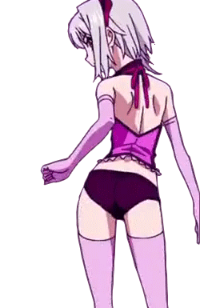

Лабораторна робота№2 ІТех
Ісамутдінов Даніїл
Приклад зміни стилю різними способами:
-
Згрупована стилізація через селектор тегів із стильової таблиці підключеної зі зовнішнього CSS-файлу
(Стиль береться з: style.css: h2,h3,h4,h5,h6 { ... })
-
Тут вже одиночна стилізація через селектор тегу у контейнері <style>
(Стиль береться з: <style> h3 { ... } </style>)
-
Це стилізація через inline-опис стилю
(Стиль береться з: <h4 style=" ... ">)
-
Це стилізація через селектор класу
(Стиль береться з: <style> .червоний { ... } </style>)
-
Це стилізація через селектор ідентифікатор
(Стиль береться з: <style> #чорний { ... } </style>)
Види позиціонування блочних елементів за рахунок властивості position:
static - елемент розташовується відповідно до звичайного потоку документа та не підвладний діям зсуву.
static - "зміщений" на 40 пікселей вниз-вправо
relative - елемент розташовується відповідно до звичайного потоку документа, а потім зміщується відносно самого себе.
relative - зміщений на 40 пікселей вниз-вправо
fixed - Елемент видаляється з звичайного потоку документу, і для нього не створюється місця в макеті сторінки. Він розташовується відносно початкового блоку-предка, створеного вікном перегляду.
fixed - "зміщений" на 40 пікселей вниз-вправо
sticky - елемент розташовується відповідно до звичайного потоку документа, а потім зміщується відносно його найближчого прокручуваного предка та блоку-предка.
sticky - розташований у звичайному потоку документа та приклеєнийний до нижнього-лівого кута
Приклад використання властивості flow:

Властивість flow CSS - розміщує елемент зліва чи справа від контейнера, дозволяючи тексту та вбудованим елементам обтікати його. Елемент видаляється зі звичайного потоку сторінки, але все ще залишається частиною потоку (на відміну від абсолютного позиціонування).
Приклад використання flexbox:
box 1
box 2
box 3
box 4
box 5
box 6